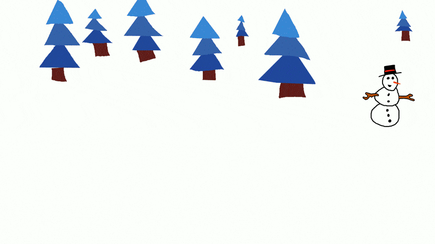

Carl Valentin GmbH
Für Carl Valentin entwickelte ich bereits Anwendungen, Apps und Skripte in Java, Flutter, Python und
Lua.
Desweiteren erstellte ich Filme und Animationen für den Support und als Grußkarten.
Hier eine Auswahl meiner Projekte:
RemoteControll - App
Eine App, mit welchen sich die Thermotransferdrucker von Carl Valentin aus der Ferne fernsteuern lassen. Dafür wurde das Bedieninterface mitsamt der Displaydarstellung der Drucker abgebildet und die Darstellung jeweils auf Smartphone und Tabletgröße sowie auf die Displayausrichtung angepasst. Weitere Funktionen sind zum Beispiel das flashen von Firmwareupdates von einem FTP-Server auf den Drucker sowie die Bedienung mit Maus für eine Portierung auf Windows und Linux.


Programme
jFileTransfer
Ein Programm, mit welchem Dateien via FTP von einem Drucker auf den lokalen PC oder einen anderen Drucker übertragen werden können. Das ganze funktioniert bidirektional. Die Oberfläche ist auf eine Touchbedienung angepasst.
LabelDwarf
Ein Etiketteneditor, mit welchem sich Etiketten erstellen und bearbeiten lassen. Alle Elemente sind per Drag-and-Drop platzierbar. Es können Texte, QR-Codes und Zeitelemente auf das Etikett angebracht werden.
Animationen - Grußkarten
Ostern

Weihnachten
TAPS
SIA-Projekt mit dem Technischen Gymnasium der staatlichen Feintechnikschule Schwenningen.
Aufgabe: Integration eines mechanischen Touch-Testers in ein bestehendes Testsystem zum Testen von
Thermotransfer-Etikettendruckern.
Bisheriges Verfahren:
- Senden der Druckerdaten an den Drucker
- Emulieren eines Tastendrucks in der Firmware
- Vergleich der im Druckerspeicher erstellten Grafik mit einer hinterlegten Referenz
Der XY-Plotter wurde selbst gebaut und in Java programmiert. Er kann über eine Touchoberfläche bedient oder über das Netzwerk angesteuert werden.
Video des fertigen Plotters:
Support-Videos
Erstellung mehrerer Support-Videos für Kunden mit animiertem Logo im Intro und animierten Textbannern. Hier ein Beispiel: